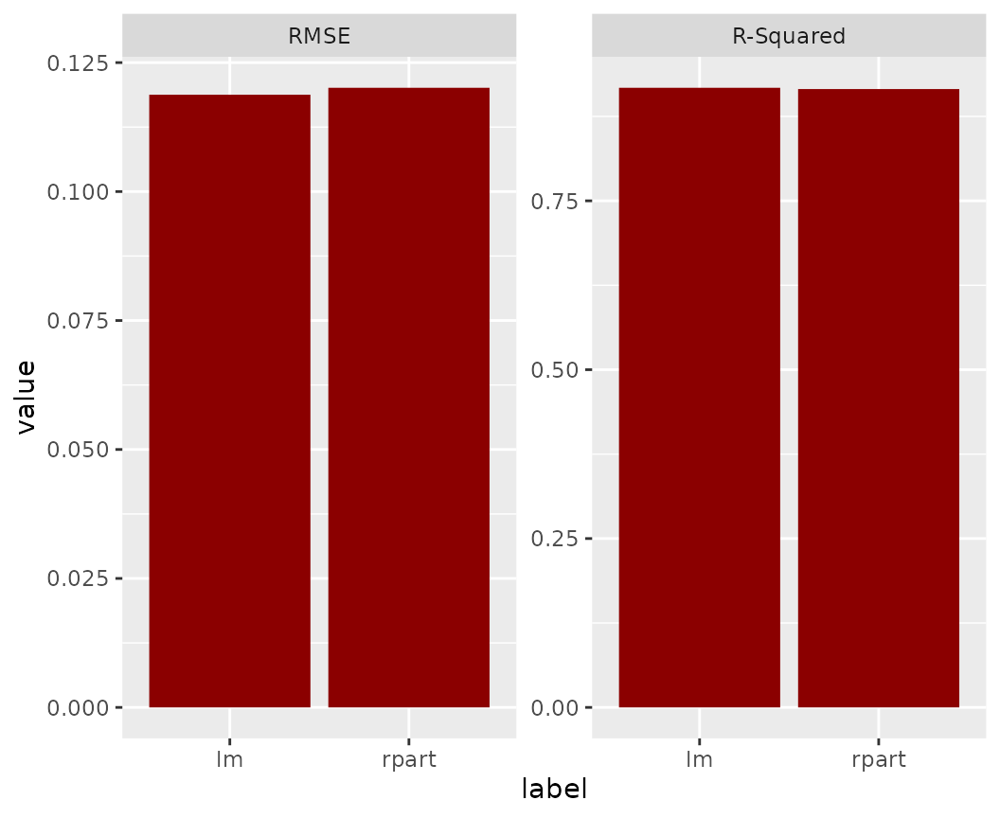
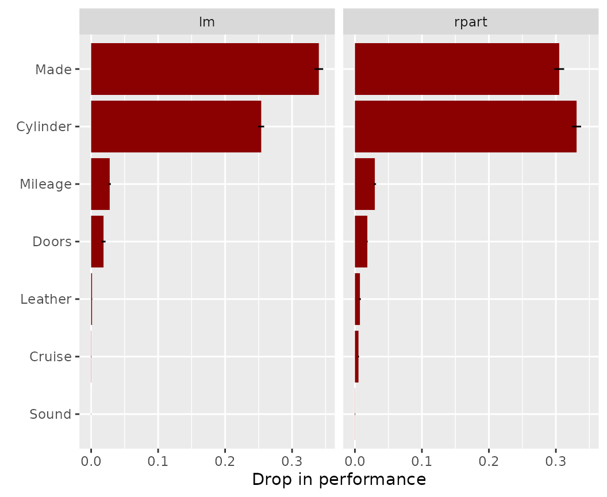
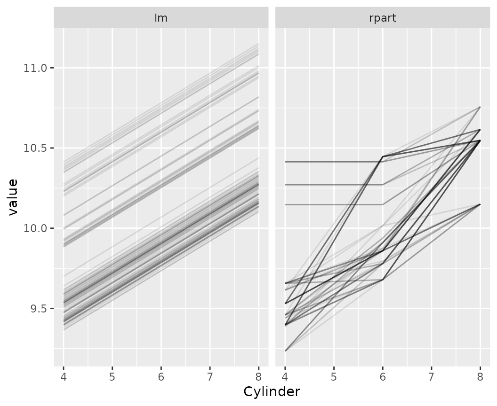
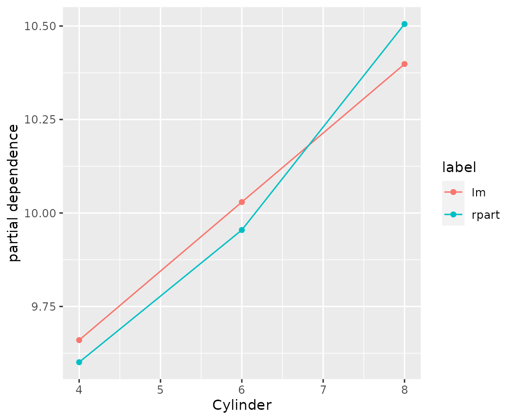
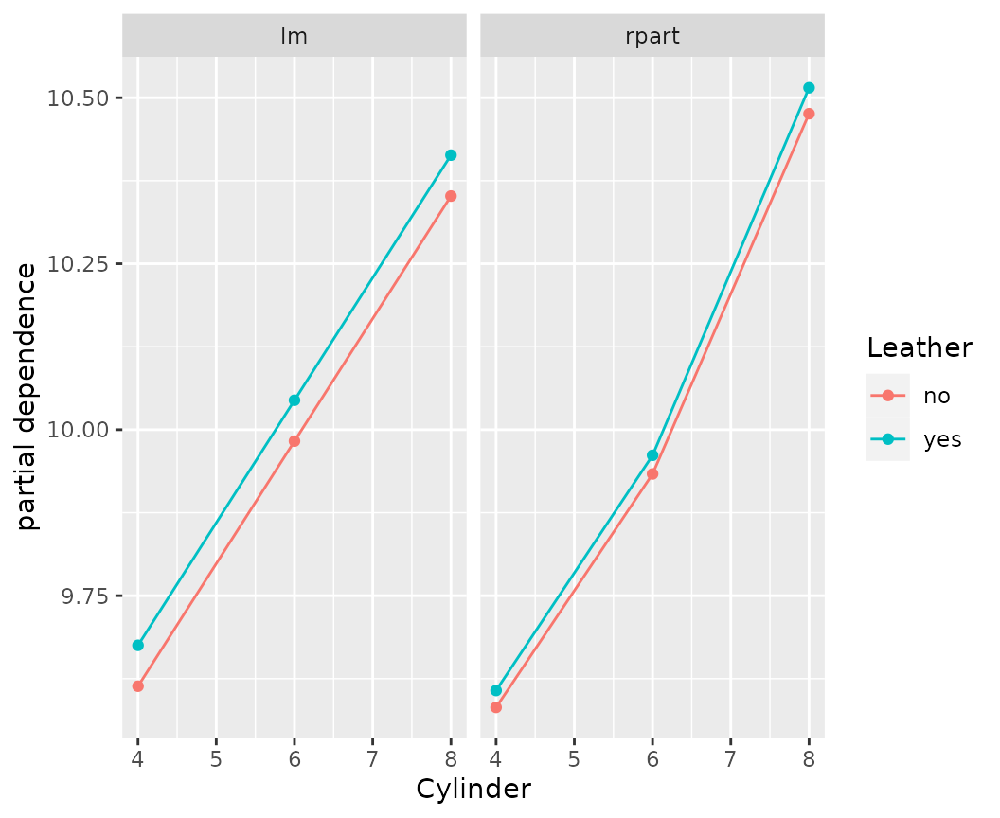
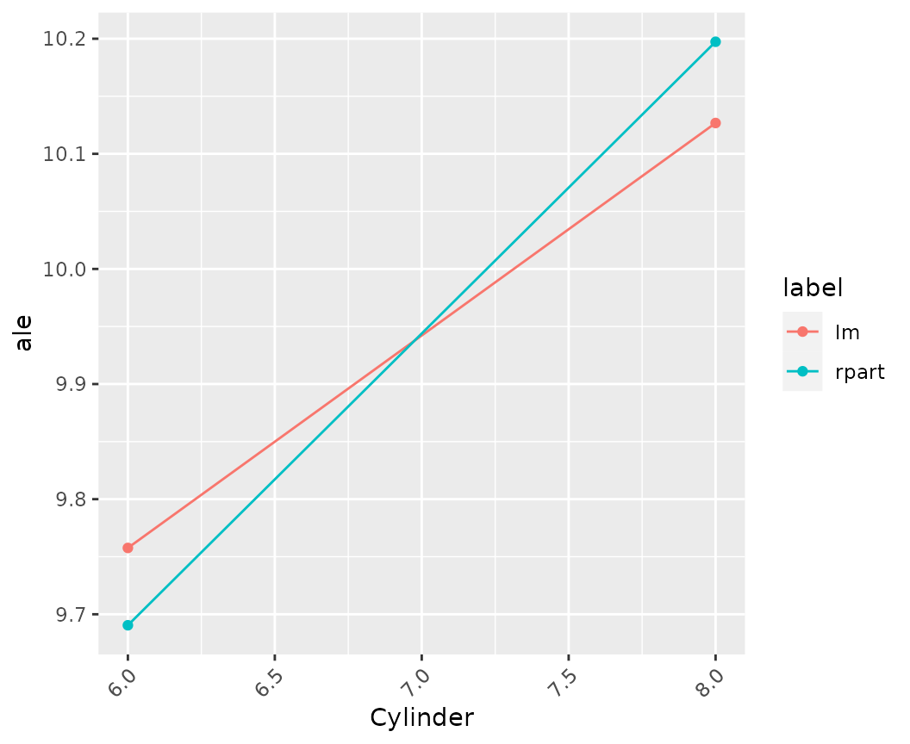
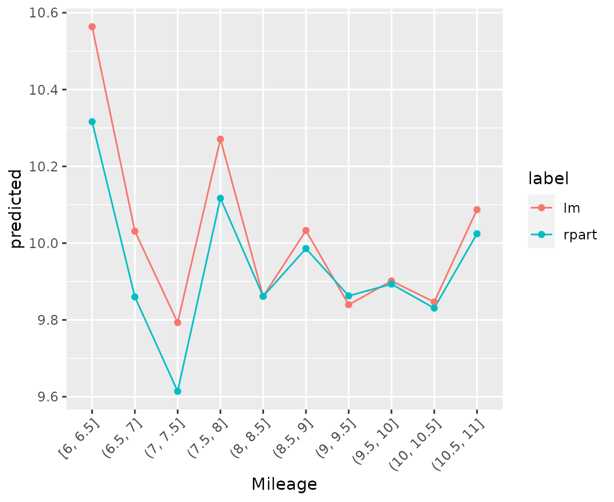
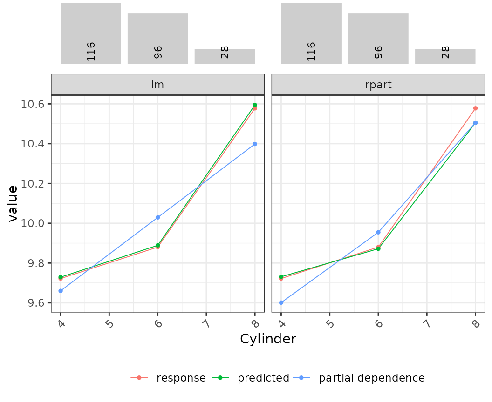
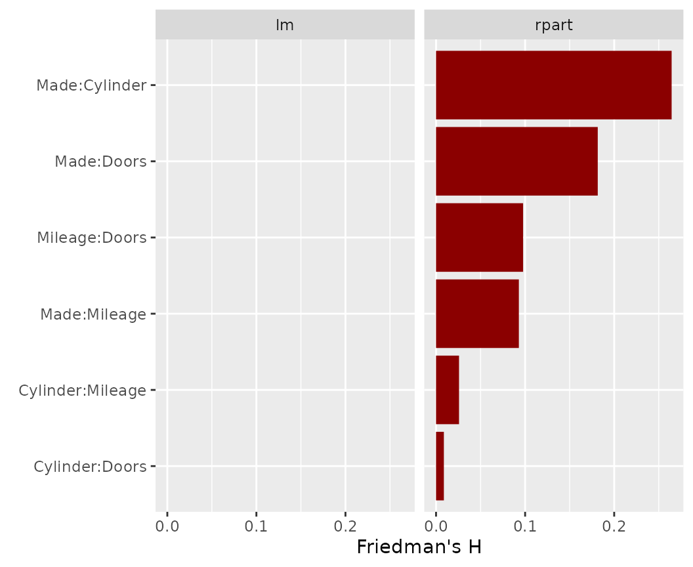
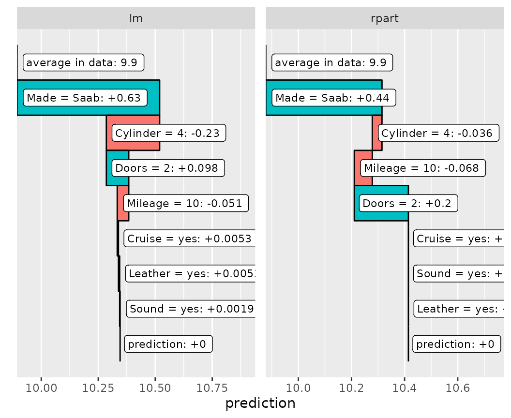

This vignette shows how to use flashlight for
interpretation of models trained with caret. It is very
straightforward - no extra line of code is required.
cars data set
The caret package contains some wonderful data sets for
playing, e.g. the cars data set.
data(cars)
str(cars)
#> 'data.frame': 804 obs. of 18 variables:
#> $ Price : num 22661 21725 29143 30732 33359 ...
#> $ Mileage : int 20105 13457 31655 22479 17590 23635 17381 27558 25049 17319 ...
#> $ Cylinder : int 6 6 4 4 4 4 4 4 4 4 ...
#> $ Doors : int 4 2 2 2 2 2 2 2 2 4 ...
#> $ Cruise : int 1 1 1 1 1 1 1 1 1 1 ...
#> $ Sound : int 0 1 1 0 1 0 1 0 0 0 ...
#> $ Leather : int 0 0 1 0 1 0 1 1 0 1 ...
#> $ Buick : int 1 0 0 0 0 0 0 0 0 0 ...
#> $ Cadillac : int 0 0 0 0 0 0 0 0 0 0 ...
#> $ Chevy : int 0 1 0 0 0 0 0 0 0 0 ...
#> $ Pontiac : int 0 0 0 0 0 0 0 0 0 0 ...
#> $ Saab : int 0 0 1 1 1 1 1 1 1 1 ...
#> $ Saturn : int 0 0 0 0 0 0 0 0 0 0 ...
#> $ convertible: int 0 0 1 1 1 1 1 1 1 0 ...
#> $ coupe : int 0 1 0 0 0 0 0 0 0 0 ...
#> $ hatchback : int 0 0 0 0 0 0 0 0 0 0 ...
#> $ sedan : int 1 0 0 0 0 0 0 0 0 1 ...
#> $ wagon : int 0 0 0 0 0 0 0 0 0 0 ...We then use the data to fit two types of regression to predict log(Price) by log(Mileage) and the other covariables. Car mades are already dummy coded. We will revert this in order to simplify the explainer process. Additionally, we represent some 0-1 dummies by nice, meaningful factors.
undo_dummies <- function(df, cols) {
factor(data.matrix(df[, cols]) %*% seq_along(cols), labels = cols)
}
no_yes <- function(x) {
factor(x, 0:1, c("no", "yes"))
}
# Prepare data
cars <- cars %>%
mutate(Price = log(Price),
Mileage = log(Mileage),
Made = undo_dummies(., c("Buick", "Cadillac", "Chevy", "Pontiac", "Saab", "Saturn"))) %>%
mutate_at(c("Cruise", "Sound", "Leather"), no_yes)
# Response and covariables
y <- "Price"
x <- c("Cylinder", "Doors", "Cruise", "Sound", "Leather", "Mileage", "Made")
# Data split
set.seed(1)
idx <- c(createDataPartition(cars[[y]], p = 0.7, list = FALSE))
tr <- cars[idx, c(y, x)]
te <- cars[-idx, c(y, x)]
# Fit the models with caret (without tuning)
fit_lm <- train(reformulate(x, y),
data = tr,
method = "lm",
tuneGrid = data.frame(intercept = TRUE),
trControl = trainControl(method = "none"))
fit_rpart <- train(reformulate(x, y),
data = tr,
method = "rpart",
xval = 0,
tuneGrid = data.frame(cp = 0.001),
trControl = trainControl(method = "none"))Then we collect all infos to build (multi-)flashlights, the core objects for explaining and comparing the models.
fl_lm <- flashlight(model = fit_lm, label = "lm")
fl_rpart <- flashlight(model = fit_rpart, label = "rpart")
fls <- multiflashlight(list(fl_lm, fl_rpart), y = y, data = te,
metrics = list(RMSE = rmse, `R-Squared` = r_squared))Let us go through a selection of explainability tools.
The models perform essentially similar.
light_performance(fls) %>%
plot(fill = "darkred")
Let’s study permutation importance regarding RMSE metric.
imp <- light_importance(fls, m_repetitions = 4)
plot(imp, fill = "darkred")
Now, let’s look at a couple of ways to visualize effects.
# Individual conditional expectations (ICE). Using a seed guarantees the same observations across models
light_ice(fls, v = "Cylinder", n_max = 100, seed = 54) %>%
plot(alpha = 0.1)
# Partial dependence profiles
light_profile(fls, v = "Cylinder") %>%
plot()
light_profile(fls, v = "Cylinder", by = "Leather") %>%
plot()
# Accumulated local effects
light_profile(fls, v = "Cylinder", type = "ale") %>%
plot()
# M-Plots
light_profile(fls, v = "Mileage", type = "predicted") %>%
plot()
# Response profiles, prediction profiles, partial dependence in one
eff <- light_effects(fls, v = "Cylinder")
eff %>%
plot() %>%
plot_counts(eff, alpha = 0.3)
How strong are the pairwise interactions among the four most important predictors? Surprise, surprise: for the linear regression, there are none!
light_interaction(fls, v = most_important(imp, 4), pairwise = TRUE, n_max = 50, seed = 63) %>%
plot(fill = "darkred")
We can explain the predictions of single observations…
light_breakdown(fls, new_obs = te[1, ]) %>%
plot(size = 3, facet_ncol = 2)
There is much more to explore: SHAP values, global surrogate models, etc.